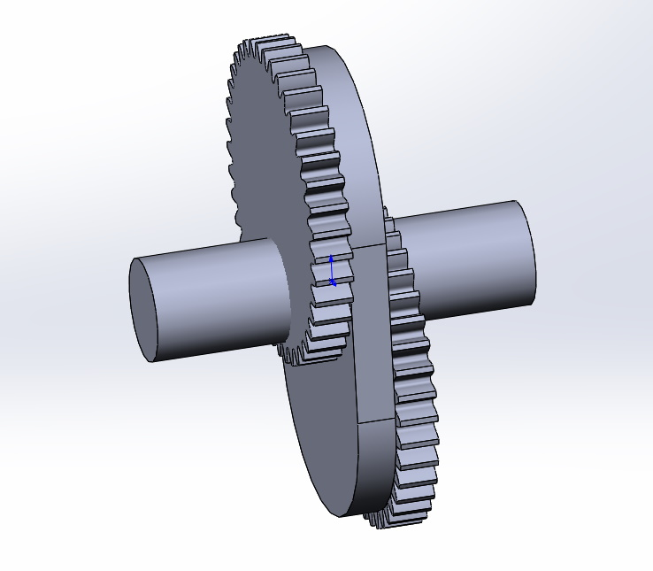
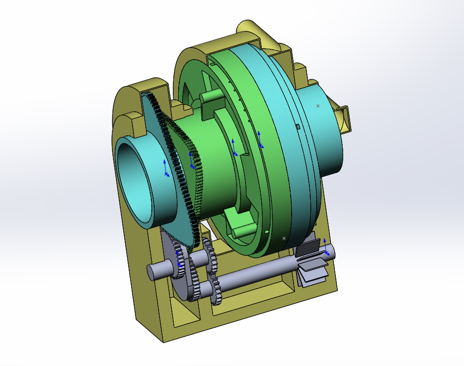

В самих цилиндрах нет подвижных деталей. Они совершают только вращательные движения друг относительно друга.
Основой зубчатой передачи является зубчатый вал со смещенными шестернями. Так как по виду он сильно напоминает обычный коленвал - буду называть его зубчатым коленвалом (ЗКВ).

Три детали (2 цилиндра и ЗКВ) устанавливаются в корпус. Цилиндры своими зубчатыми венцами входят в звцепление с валом (ЗКВ). 